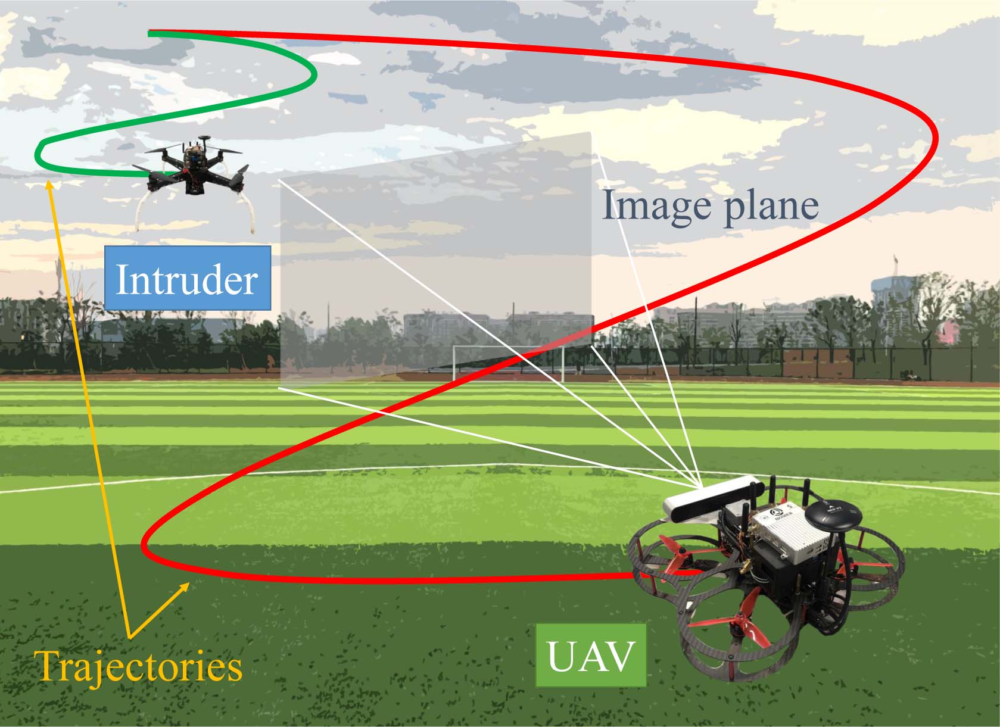
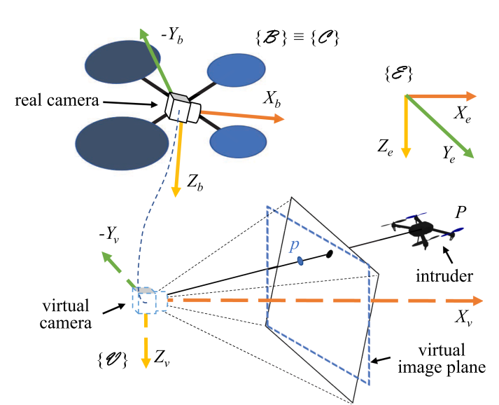
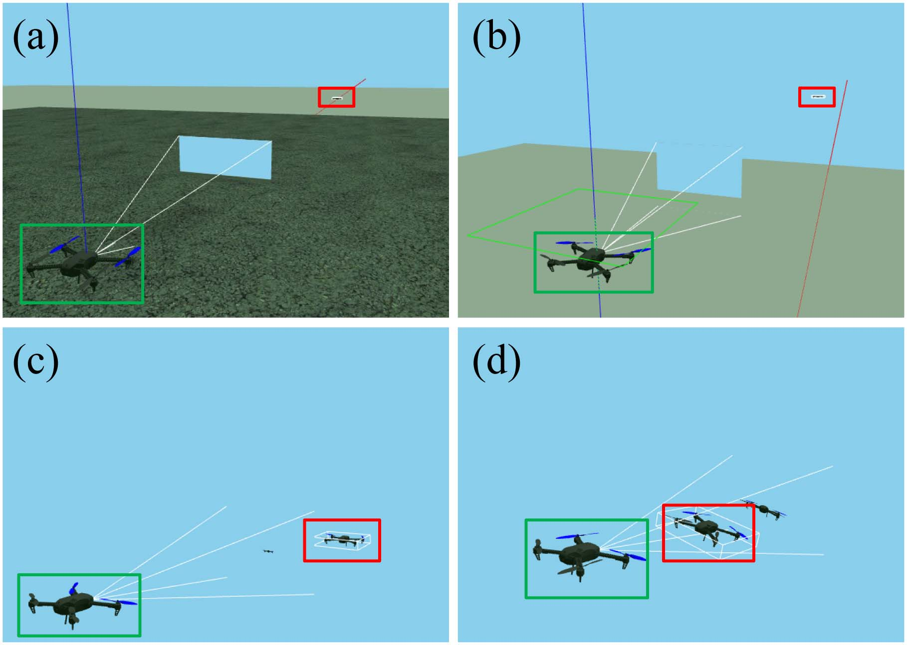
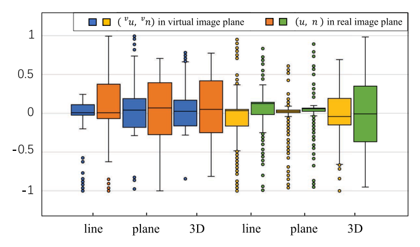
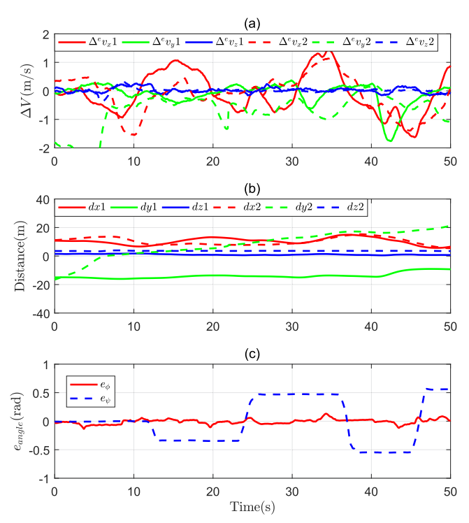

| Title | Image-Based Visual Servoing of Quadrotors to Arbitrary Flight Targets（基于图像的视觉伺服用于四旋翼追踪任意飞行目标） |
| Authors | Guojie Wang（王国杰）、Jiahu Qin（秦家虎，corresponding，IEEE Senior Member）、Qingchen Liu（刘庆晨）、Qichao Ma（马麒超，IEEE Member）、Cong Zhang（张聪） |
| Affiliation | 中国科学技术大学（University of Science and Technology of China, USTC），自动化系；秦家虎同时隶属于合肥综合性国家科学中心人工智能研究院 |
| Venue | IEEE Robotics and Automation Letters (RA-L)，2023年4月，Vol. 8, No. 4, pp. 2022–2029 |
| DOI / Links | 10.1109/LRA.2023.3245416 | Received: 2022-08-04 | Accepted: 2023-01-22 | Published: 2023-02-15 |
| TL;DR | 针对四旋翼无人机在三维空间中追踪任意自由飞行目标的难题，提出了一种基于虚拟相机（virtual camera）方法的 IBVS 控制方案。核心创新：（1）通过将目标点重投影到始终垂直于地面的虚拟图像平面，消除了俯仰和偏航运动对图像误差的耦合影响；（2）提出改进的图像误差项，使误差中位数和四分位距分别降低 22.37% 和 35.10%；（3）基于完整动力学模型（而非简化模型）设计控制器，在仿真和实物实验中均验证了对直线、正弦、螺旋线三种目标轨迹的有效跟踪。 |
| Inspiration Source | → What Insight It Inspired | Type |
|---|---|---|
| 虚拟相机方法在固定/平面目标 IBVS 中的应用（Lee et al. 2012; Zheng et al. 2017） | → 将虚拟相机的 Xv 轴始终对齐世界坐标 Xe 轴，可以将俯仰/偏航从视觉伺服动力学中解耦。但此前工作均假设目标固定或仅作平面运动——本文首次将这一思路推广到三维空间任意运动目标 | 架构 |
| 完整动力学模型 vs 简化动力学模型（Yang & Quan 2020 的局限） | → 简化模型（假设 φ, θ ≈ 0）限制了无人机的机动能力，无法应对目标的大范围机动。本文基于完整刚体动力学设计控制器，保留了姿态回路的全部自由度，使跟踪飞行器可以执行更大范围的姿态调整 | 方法 |
| Lyapunov 稳定性分析 + 充分条件推导 | → 通过构造 Lyapunov 函数 $V_i = \frac{1}{2}e_i^T e_i$，推导出飞行速度与目标距离之间的权衡条件：$v_x^2 + v\dot{v}_x \le k_1$——即距离越远时跟踪速度不能太快，否则容易丢失特征。这个条件为实际飞行中的速度规划提供了理论指导 | 数学 / 控制 |
| KCF（Kernelized Correlation Filter）在线视觉跟踪 | → 在实物实验中，使用 KCF 算法在视频帧中实时跟踪入侵者目标，为 IBVS 控制器提供连续的目标图像坐标。将经典计算机视觉跟踪器与控制理论结合，形成了完整的感知-控制闭环 | 工程 / 集成 |
flowchart LR
subgraph IN["输入"]
CAM["前视单目相机"]:::percept
IMU["IMU 姿态"]:::percept
end
subgraph PER["感知层"]
KCF["目标跟踪 KCF"]:::percept
end
subgraph VC["虚拟相机层（本文创新）"]
PRJ["重投影
虚拟图像平面"]:::novel
ERR["图像误差"]:::novel
end
subgraph CTL["控制与执行"]
LAW["IBVS 控制律"]:::control
PX4["Pixhawk / PX4"]:::platform
end
CAM -->|"图像 640×480"| KCF
KCF -->|"像素 (u,v)"| PRJ
IMU -->|"滚转角 φ"| PRJ
PRJ -->|"虚拟特征 p"| ERR
ERR -->|"误差 e"| LAW
LAW -->|"推力 f · 角速率 ω"| PX4
classDef percept fill:#fef7ed,stroke:#f59e0b,stroke-width:2px,color:#92400e
classDef novel fill:#fff1f2,stroke:#e11d48,stroke-width:3px,color:#be123c
classDef control fill:#f0ebfd,stroke:#8b5cf6,stroke-width:2px,color:#6d28d9
classDef platform fill:#e6f7ee,stroke:#10b981,stroke-width:2px,color:#047857
配色：橙 = 相机 / IMU 与 KCF 跟踪、红框 = 本文创新层、紫 = 控制律、绿 = Pixhawk。这一层的用处只有一句话：把真实图像平面上的像素重投影到虚拟图像平面（Xv ∥ Xe，只随滚转角转动），特征运动便与俯仰 / 偏航角速率解耦，后面的控制律才好推、才稳。
flowchart LR
IMG["相机图像"]:::percept
TRK["KCF 跟踪"]:::percept
REP["虚拟重投影"]:::novel
ERR["图像误差"]:::novel
LAW["IBVS 控制律"]:::control
DEP["距离估计"]:::novel
UAV["四旋翼"]:::platform
ATT["IMU 姿态"]:::percept
IMG -->|"640×480 · 20 fps"| TRK
TRK -->|"像素 (u,v)"| REP
ATT -->|"滚转角 φ"| REP
REP -->|"虚拟特征 p"| ERR
ERR -->|"误差 e"| LAW
TRK -->|"像素数 N"| DEP
DEP -->|"距离 d"| LAW
LAW -->|"f, ω"| UAV
UAV -.->|"新图像"| IMG
UAV -.->|"φ, θ, ψ"| ATT
classDef percept fill:#fef7ed,stroke:#f59e0b,stroke-width:2px,color:#92400e
classDef novel fill:#fff1f2,stroke:#e11d48,stroke-width:3px,color:#be123c
classDef control fill:#f0ebfd,stroke:#8b5cf6,stroke-width:2px,color:#6d28d9
classDef platform fill:#e6f7ee,stroke:#10b981,stroke-width:2px,color:#047857
信号一路向右：图像 → KCF 像素 → 虚拟平面特征 → 误差 → 推力 / 角速率 → 四旋翼；虚线是姿态回测与下一帧图像，20 fps 的视觉与 IMU 姿态构成双环。距离不是测出来的：Alg.1 用目标像素数 N 与相机水平分辨率 Ne 反推，d 小于阈值就把前向速度置零，避免“追上又飞过头”。
| 类别 | 内容 | 维度 |
|---|---|---|
| 输入 | 前视单目相机图像序列（640x480 @ 20fps）+ IMU 数据（角速度 + 欧拉角） | 图像：目标边界框中心 $(u, v)$；IMU：$[\phi, \theta, \psi, \omega_1, \omega_2, \omega_3]$ |
| 输出 | 四旋翼控制指令：总推力 $f$ + 三轴角速度指令 $[\omega_1, \omega_2, \omega_3]$ | 推力（N）+ 角速度（rad/s）→ 电机 PWM |
| 目标 | 使目标图像补丁始终位于虚拟图像平面中心 $(0,0)$，同时无人机与目标之间的距离逐渐收敛到最小值 | 误差中位数降低 22.37%（vs 传统方法），IQR 降低 35.10% |
这是一个基于视觉反馈的非线性控制问题——核心在于将欠驱动四旋翼的强耦合动力学与图像空间的特征运动关联起来，并设计一个在 Lyapunov 意义下稳定的反馈控制器。与端到端学习方法不同，本文的方法是基于模型的（model-based）：显式推导四旋翼动力学和虚拟相机投影方程，通过构造 Lyapunov 函数推导控制律和稳定性充分条件。平台：四旋翼无人机（m = 1.55 kg，轴距 0.47 m），场景：室外三维空间追踪自由飞行入侵者（直线/正弦/螺旋线三种轨迹），任务：视觉伺服追踪 + 接近。
⚠ 表头用英文，正文用中文
| Prior Method | Core Idea | Why It Fails |
|---|---|---|
| 球面图像矩 IBVS（Hamel & Mahony 2002; Guenard et al. 2008） | 使用球面投影几何定义图像矩特征，利用透视投影的几何不变性获得部分解耦的动力学方程 | 虽然球面投影比平面投影具有更好的旋转不变性，但仅适用于固定或平面运动目标。当目标在三维空间中随机飞行时，球面图像矩无法消除所有姿态耦合——尤其是目标快速横向移动时，图像矩的非线性使其控制设计变得极其复杂。 |
| 虚拟相机 IBVS（Lee et al. 2012; Zheng et al. 2017） | 将图像特征重投影到虚拟图像平面（Xv∥Xe），虚拟平面上的特征运动与俯仰/偏航解耦，从而简化 IBVS 控制器设计 | 效果优秀——但仅针对固定或平面运动目标进行了验证。Zheng et al. (2017) 需要已知无人机线速度的假设。这些方法没有在三维自由飞行目标场景下接受过考验——本文的工作正是填补了这一空白。 |
| 简化动力学 + 拦截 IBVS（Yang & Quan 2020, ICRA） | 用简化刚体动力学模型（忽略高阶姿态耦合项，隐含小角度假设）设计 IBVS 控制器用于无人机拦截 | 这是与本文最相关的前人工作。但简化模型隐含了小角度假设（φ, θ ≈ 0），导致跟踪无人机的机动能力受限——当目标做大范围机动时，简化模型的控制精度急剧下降。对比实验中该方法在 y 方向的跟踪误差大幅抖动，最终距离误差（20.83 m）是本文方法（10.30 m）的约两倍。 |
| 基于学习的视觉伺服（Shi et al. 2018; Sampedro et al. 2018） | 用 Q-learning 或深度强化学习端到端地学习视觉伺服策略，避免显式建模复杂动力学 | 学习过程需要大量的仿真训练和特定的环境参数——如果实际飞行环境与训练环境不同（光照、背景、目标外观），性能会急剧下降。此外，学习型方法缺乏稳定性保证——控制器可能在状态空间的某些区域产生不可预测的行为，这在安全关键的拦截任务中是不可接受的。 |
本文的核心是一个基于模型的视觉伺服控制方案，由四个相互衔接的技术模块构成：（1）虚拟相机重投影——将目标坐标从真实图像平面映射到虚拟图像平面，消除俯仰/偏航耦合；（2）改进的图像误差项——在虚拟平面上定义误差，降低姿态扰动对反馈信号的影响；（3）Lyapunov 平移控制器——基于虚拟平面误差的李雅普诺夫函数推导控制律和稳定性充分条件；（4）滚转/偏航姿态控制器——分别保证滚转指数收敛和偏航阻尼稳定。以下逐一拆解关键公式。
| 参数 | 取值 | 含义 | 为什么取这个值 |
|---|---|---|---|
| 控制增益 $k_1, k_2$ | 6, 8 | 平移控制器的比例增益（$v_{vy} = k_1 v_u$, $v_{vz} = k_2 v_n$） | 需要在响应速度（增益大 → 收敛快）与稳定性（满足 $v_x^2 + v\dot{v}_x \le k_i$ 的条件）之间平衡。$k_2 > k_1$ 因为垂直方向的跟踪精度对飞行安全影响更大 |
| 控制增益 $k_3$ | 3 | 垂直速度跟踪增益（推力公式中的阻尼项） | 较低的增益值提供适度的垂直阻尼，避免推力指令出现过大的振荡 |
| 滚转增益 $k_\phi$ | 2 | 滚转误差反馈增益（$\dot{e}_\phi = -k_\phi e_\phi$） | 保证指数收敛速率适中——过快会导致滚转指令过大（可能超出飞行包线），过慢则姿态稳定不及时 |
| 偏航增益 $k_\psi$ | 3.5 | 偏航阻尼增益（$\omega_3 = k_\psi(\psi - 0)$） | 较高增益使偏航迅速收敛到零，确保机头对准目标方向——这对于前视单目相机保持目标在视场内至关重要 |
| 相机参数 | 640x480 @ 20fps, FOV 1.047 rad | 前视单目相机的分辨率和视场角 | 640x480 提供足够的像素分辨率用于 KCF 跟踪；20fps 匹配视觉伺服的控制频率（低于 IMU 的更新率）；60° FOV 在目标覆盖范围与控制精度之间取得平衡 |
| 飞行器质量与惯性 | m = 1.55 kg, J = diag{0.029, 0.029, 0.055} | 四旋翼的质量和惯性张量 | 中等尺寸四旋翼（轴距 0.47 m），载重能力足够搭载 ZED 相机 + NVIDIA TX2 + Pixhawk；对称惯性设计（$J_{xx} \approx J_{yy}$）简化了滚转-俯仰动力学 |
理解本文需要掌握三个关键原理：虚拟相机的几何解耦原理（为什么重投影能消除俯仰/偏航耦合）、基于 Lyapunov 的 IBVS 控制器设计流程（如何从图像误差到稳定控制律）、欠驱动飞行器的分层控制架构（平移-滚转-偏航的解耦逻辑）。
为什么真实图像平面不行？真实相机的光轴随俯仰角 $\theta$ 和偏航角 $\psi$ 变化。当无人机俯仰以产生前向推力时，真实图像平面随之倾斜——原本在图像中心的目标会立即偏离中心。控制器将这个偏离解读为"位置误差"，发出更强的俯仰指令来"修正"，形成恶性循环。虚拟相机方法通过在图像层面而非动力学层面消除耦合，避开了欠驱动系统的结构限制——你不需要额外的执行器，只需要在软件中改变"看"目标的方式。
稳定性充分条件的物理直觉：条件 $v_x^2 + v\dot{v}_x \le k_1$ 中的 $v_x$ 是虚拟相机系下目标在 Xv 方向的距离。当距离 $v_x$ 较大时，$v_x^2$ 项增大，需要通过减小 $v\dot{v}_x$（即控制飞行加速度）来满足不等式——这就是"距离远时不能飞太快"的数学表达。反之，距离足够近时（$v_x$ 小），可以允许更大的飞行速度和加速度。这个条件为实际飞行中的速度自适应调节提供了理论依据。
📷 论文原图截图。图片保存至 figures/ 子目录。命名 fig1.png ~ fig3.png 即可自动显示。

📷 请将截图保存为figures/fig1.png本图展示了：论文的整体研究场景——一架入侵者无人机在三维空间中任意飞行（蓝色轨迹），而追踪四旋翼（红色）基于机载前视相机捕获的图像，运行 IBVS 追踪算法自动跟踪入侵者。追踪算法运行在机载计算机（NVIDIA TX2）上，相机为固定安装的前视单目相机。

📷 请将截图保存为figures/fig2.png本图展示了：整篇论文最核心的几何概念——虚拟相机坐标系和虚拟图像平面。虚线表示虚拟相机帧 V = {Xv, Yv, Zv} 及其对应的虚拟图像平面。实线表示真实相机帧 C 和真实图像平面。目标点 P 在虚拟图像平面上的投影 p（蓝点）被用于构建视觉伺服模型。

📷 请将截图保存为figures/fig3.png本图展示了：Gazebo 仿真环境中四旋翼追踪自由飞行入侵者的四个关键阶段。追踪无人机（绿色边界框）和入侵者（红色边界框）均为四旋翼模型，尺寸均为 0.47 m x 0.47 m x 0.11 m。

📷 请将截图保存为figures/fig9.png本图展示了：改进图像误差项（ours，蓝色）与传统误差项（previous，橙色）在三种目标轨迹（直线、平面、三维）上的统计对比。箱线图显示中位数、四分位数、上下界和异常值。

📷 请将截图保存为figures/fig13.png本图展示了：实物飞行实验中本文方法（实线）与最相关的前人工作 Yang & Quan 2020（虚线）的全面对比。三张子图分别为速度跟踪误差、UAV-入侵者距离、姿态角误差。两种方法在相同初始条件下进行对比。
| 数据问题 | 潜在困难 | 严重程度 |
|---|---|---|
| KCF 跟踪失败（遮挡、快速机动、光照变化） | IBVS 控制器完全依赖目标图像坐标——一旦 KCF 输出错误坐标，控制器会驱动无人机飞向错误方向。论文未提及跟踪失败时的 fallback 策略。这是实际部署中最致命的单点故障 | ★★★★★ |
| IMU 偏航角漂移 | 虚拟相机重投影需要准确的欧拉角 $(\phi, \theta, \psi)$。MEMS IMU 的偏航角会随时间漂移（缺少磁力计校正时尤其严重），导致虚拟图像平面逐渐偏离真实的"水平"姿态，解耦效果下降 | ★★★★ |
| 单目距离估计误差 | $d \approx (N_e/N)d_e$ 假设目标实际尺寸已知且目标正对相机。实际追踪中目标可能在任意姿态下被观测——侧向时的图像宽度小于正面宽度，导致距离被高估，无人机可能过早停止逼近 | ★★★★ |
| 控制增益对飞行条件的敏感度 | 仿真中使用的 $k_1=6, k_2=8, k_3=3, k_\phi=2, k_\psi=3.5$ 在仿真和特定实物实验中有效，但论文未讨论这些增益在不同飞行条件（风速、目标速度）下的鲁棒性。实物实验在室外进行，风干扰的影响未被系统性分析 | ★★★ |
| 参考文献 | 为什么重要 |
|---|---|
| Zheng et al. (2017) — Image-Based Visual Servoing of a Quadrotor Using Virtual Camera Approach. IEEE/ASME Trans. Mechatron. 22(2), 972–982 | 虚拟相机 IBVS 方法的直接前身——首次将虚拟相机用于四旋翼 IBVS，但限于固定目标。本文在此基础上推广到三维任意运动目标，并加入了完整动力学模型和改进误差项。理解两篇论文的异同是把握本文贡献核心的关键。 |
| Yang & Quan (2020) — An Autonomous Intercept Drone with Image-Based Visual Servo. IEEE ICRA, 2230–2236 | 本文最直接的对比对象——同样用 IBVS 实现无人机追踪/拦截。关键区别：Yang & Quan 使用简化动力学模型（小角度假设），本文使用完整模型。Fig. 13 的实物对比实验直接展示了完整模型的优势——距离误差从 20.83 m 降到 10.30 m。 |
| Hamel & Mahony (2002) — Visual Servoing of an Under-actuated Dynamic Rigid-body System: An Image-based Approach. IEEE Trans. Robot. Automat. 18(2), 187–198 | IBVS 用于欠驱动系统的开山之作——提出了基于球面图像矩的 IBVS 方案。虽然局限于固定目标，但为后续所有四旋翼 IBVS 工作（包括本文）奠定了理论基础。 |
| Chaumette & Hutchinson (2006, 2007) — Visual Servo Control Parts I & II. IEEE Robot. Automat. Mag. | 视觉伺服领域的经典教程（Part I: 基本方法; Part II: 高级方法）。任何从事 IBVS 研究的必读文献。本文的虚拟相机方法可以被视为 Part II 所讨论的"advanced approaches"中"坐标系变换"策略的自然延伸。 |
| Henriques et al. (2015) — High-Speed Tracking with Kernelized Correlation Filters. IEEE Trans. Pattern Anal. Mach. Intell. 37(3), 583–596 | KCF 跟踪器——本文实物实验中使用的视觉跟踪算法。KCF 以高速（数百 fps）和高成功率著称，其速度远高于相机帧率（20 fps），为 IBVS 控制器提供了低延迟的目标坐标反馈。理解 KCF 的工作原理有助于评估本文视觉感知链路的性能瓶颈。 |
对象：论文 PDF（IEEE RA-L, vol. 8, no. 4, pp. 2022–2029, 2023，DOI 10.1109/LRA.2023.3245416）第 2–5 页全部 14 个编号公式（式 (1)–(14)）、无编号但构成方法核心的式子（T 矩阵、虚拟相机投影、Lyapunov 函数、控制律、充分条件等，本文编号为补充式 (D1)–(D16)），以及 Algorithm 1 伪代码。方法：本文不是复述论文文字，而是：
_derivation_work/1-ibvs/verify_final.py 与 verify_fix.py（可复跑）验证符号约定、矩阵一致性与数值例；| 公式 | 内容 | 独立验证结论 |
|---|---|---|
| (1)–(4) | 四旋翼刚体动力学（位置/平动/姿态运动学/角动量） | ✅ 正确。标准 NED 六自由度模型，(4) 等价 $J\dot\omega+\omega\times J\omega=\tau$ |
| T 矩阵 (D1) | 欧拉角速率 ↔ 机体角速度 | ✅ 正确。与 ZYX 约定 $\dot R=R\,sk(\omega)$ 数值一致（误差 ~10⁻⁸）；在 $\theta=\pm90°$ 奇异 |
| $v_p=R_\varphi^T(e_p-O_v)$ 与 $R_\varphi$ (D2) | 虚拟相机坐标变换 | ✅ 印刷的 $R_\varphi$ 是 $R_x(-\varphi)$（绕 Xe 反向补偿滚转），与"虚拟像面恒垂直于地面"的物理意图一致 |
| (5) | $v_p$ 的时间导数 | ⚠️ 符号矛盾：推导行印成 $-sk(\dot\varphi e_x)$，但按印刷的 $R_\varphi$ 矩阵应为 $+sk(\dot\varphi e_x)$（数值验证）。$-$ 对应的是另一种约定 $R_\varphi=R_x(+\varphi)$ |
| (6) $J_v$ | 虚拟相机图像雅可比 | ✅ 正确（相对印刷的 $R_\varphi$）：逐元素重推误差 ~10⁻⁷；且与经典 IBVS 点特征交互矩阵在 $\omega_c=(0,0,-\dot\varphi)$ 下逐项相同 |
| (7) 与 $V_i$、$\dot V_i$ (D4–D6) | 图像误差动力学与 Lyapunov 分析 | ✅ 正确。$\dot V_i$ 中 $\dot\varphi$ 项恰好相消（这就是 (5) 符号矛盾"无害"的原因） |
| 控制器 $v_{vy}=k_1v_u,\ v_{vz}=k_2v_n$ (D7)(D8) | 比例型平移控制律 | ✅ 代数正确；充分条件推导 (D10) 正确，但量纲不严谨（$v_x/2$ [m] 与 $v_{vx}$ [m/s] 相加） |
| (8) | 垂直方向位置动力学 | ✅ 正确。$(Re_z)_z=\cos\varphi\cos\theta$ 在 ZYX 下精确成立（数值验证） |
| (9) | $e_{vz}=v_{vz}\cos\varphi$ | ⚠️ 近似未声明：精确关系是 $e_{vz}=v_{vz}\cos\varphi-v_{vy}\sin\varphi$（按印刷 $R_\varphi$），丢弃了横向速度项 |
| (10) | 总推力反解 | ❌ 印刷缺项：第一项 "$v_{vz}\sin\varphi$" 缺 $\dot\varphi$，应为 $v_{vz}\dot\varphi\sin\varphi$；按印刷式括号内为 [速度]+[加速度]，量纲不一致 |
| (11)(12) | V 系动力学与 $\dot R_{\theta\psi}$ | ⚠️ 约定混用 + 定义近似：按印刷 $R_\varphi$ 应为 $+sk(\dot\varphi e_x)$（(11)）与 $+$（(12)）；且印刷定义 $R_{\theta\psi}=R_\psi R_\theta$ 只在 $\varphi=0$ 等于精确的 $R_\varphi^T R$ |
| $\omega_3=k_\psi(\psi-\psi_d)$ (D11) | 偏航控制律 | ⚠️ 符号疑点：由 (3) 的 T，小 $\varphi$ 下 $\dot e_\psi\approx +k_\psi e_\psi/\cos\theta$——正反馈发散；正确镇定律应为 $-k_\psi(\psi-\psi_d)$（实验收敛，推断实现取负号；论文无代码可核） |
| (13)(14)、$\dot e_\varphi=-k_\varphi e_\varphi$ | 滚转通道 | ✅ 正确。前馈精确抵消耦合项，误差指数收敛（时间常数 $1/k_\varphi\approx0.29$ s） |
| $\omega_2$（俯仰律） | —— | ⚠️ 推导跳跃：论文只有一句 "can be obtained"，全文无显式表达式，而 (14) 又依赖 $\omega_2$（见第 8 节，本文给出两种自洽重建） |
| Algorithm 1 | 距离估计与停止条件 | ✅ 核心几何 $d=(N_e/N)d_e$ 正确（针孔宽度比例）；伪代码有若干书写不规范（见第 10 节） |
论文印刷的 $R_\varphi=\begin{bmatrix}1&0&0\\0&\cos\varphi&\sin\varphi\\0&-\sin\varphi&\cos\varphi\end{bmatrix}$ 等于 $R_x(-\varphi)$（标准旋转矩阵的反方向）。而论文式 (5)(11)(12) 的推导行用的却是 $R_\varphi=R_x(+\varphi)$ 的求导规则。两套约定在论文中并存：
最终结论：式 (5) 的中间推导行符号印错（详见第 4 节）；$J_v$、$\dot V_i$ 和全部控制律在约定 B 下自洽且正确。由于 $\dot V_i$ 中 $\dot\varphi$ 项相消，这个印刷错误不影响论文的稳定性结论。
| 符号 | 含义 | 单位/取值 |
|---|---|---|
| $\xi=[x,y,z]^T$ | UAV 在 E 系中的位置 | m |
| $V$（分量 $e_{vx},e_{vy},e_{vz}$） | UAV 在 E 系中的线速度（$=\dot O_v$） | m/s |
| $v=[v_{vx},v_{vy},v_{vz}]^T$ | UAV 速度在 V 系中的分量（$v=R_\varphi^T\dot O_v$） | m/s |
| $\omega=[\omega_1,\omega_2,\omega_3]^T$ | 机体角速度（滚转/俯仰/偏航角速率） | rad/s |
| $\eta=[\varphi,\theta,\psi]^T$ | 欧拉角（roll/pitch/yaw） | rad |
| $m,\ g$ | 质量、重力加速度 | 1.55 kg，9.8 m/s² |
| $f$ | 总推力（标量，沿 $-Z_b$ 即向上） | N（悬停核算 $mg=15.19$ N） |
| $J$ | 机体惯性矩阵 | diag{0.029125, 0.029125, 0.055225} kg·m² |
| $\tau$ | 外扭矩（机体分量） | N·m |
| $e_p=[e_x,e_y,e_z]^T$、$v_p=[v_x,v_y,v_z]^T$ | 目标点 P 在 E 系 / V 系的坐标 | m |
| $p=[v_u,v_n]^T$ | P 在虚拟图像平面的投影（横/纵） | px（像素） |
| $\lambda$ | 相机焦距 | px；由 640 px 与视场 1.047 rad 反算 $\approx 554$ px（见 11.1） |
| $e_i=p-p_d$ | 图像误差（$p_d=[0,0]^T$ 即目标居中） | px |
| $k_1,k_2,k_3,k_\psi,k_\varphi$ | 控制增益 | 6, 8, 3, 2, 3.5（论文原文 $k_\psi=2,\ k_\varphi=3.5$；note 第 6 节参数表恰好写反，本节以论文为准，见 §12.3 问题 11） |
| $N_e,\ N,\ d_e,\ \bar d,\ k_d$ | 相机水平分辨率(640)、目标像宽、标定距离、停止阈值、阈值系数 | px, px, m, m, 无量纲 |
| $d$ | UAV 与目标沿 $X_v$ 的距离（$d=v_x$） | m |
| $sk(\cdot)$ | 反对称矩阵算子：$sk(a)b=a\times b$ | —— |
论文编号公式为 (1)–(14)。下列方法核心但论文未编号的式子，本文编号为补充式：
论文原文（第 2 页，逐字符核实）：
论文原文（第 3 页，逐字符核实）：
verify_final.py A 组）。奇异性：$\cos\theta=0$（$\theta=\pm90°$，机体竖直）处奇异；本场景水平追踪无碍。要点：第三行 $\dot\psi=(\omega_2\sin\varphi+\omega_3\cos\varphi)/\cos\theta$ 是第 9 节偏航律稳定性分析的钥匙。论文原文（第 3 页，逐字符核实）：
论文原文（第 3 页，逐字符核实，注意第二行开头的负号）：
verify_final.py B 组）。论文原文（第 3 页，逐字符核实；矩阵为 2×4，元素顺序按字符坐标确认）：
verify_fix.py C′ 组）——印刷 $J_v$ 与印刷 $R_\varphi$ 完全自洽。论文原文（第 4 页，逐字符核实）：
verify_fix.py D′ 组）。直觉：绕光轴的旋转不改变"误差到中心的平方距离"的一阶变化（旋转场切于圆）。verify_final.py F 组）。verify_final.py G 组），且 (10) 由它导出，误差会传递（见下）。论文原文（第 4 页，逐字符核实；注意两处 −sk 的负号与 "Utilizing $\dot R=R\,sk(\omega)$" 引理）：
| 项 | 印刷 (11) | 正确形式 | 差异 |
|---|---|---|---|
| 牵连项 | $-sk(\dot\varphi e_x)v$ | $+sk(\dot\varphi e_x)v$ | 符号（约定 A/B 混用，同式 (5)） |
| 重力 | $g e_z$ | $g(0,-\sin\varphi,\cos\varphi)^T$ | 横向差 $g\sin\varphi$，垂直差 $g(1-\cos\varphi)$——O(φ) 未声明近似 |
| 推力方向 | $R_{\theta\psi}e_z,\ R_{\theta\psi}:=R_\psi R_\theta$ | $R_\varphi^TR\,e_z$ | $R_\psi R_\theta$ 只是 $R_\varphi^TR$ 的 $\varphi=0$ 特例（数值验证见下） |
印刷 (12) 的 $-$ 号自洽于约定 A；印刷的 $R_\varphi$ 矩阵与 $J_v$（式 (6)）自洽于约定 B——论文在 (5)(11)(12) 用 A、在 $R_\varphi$ 矩阵与 (6) 用 B，两套约定并存。又：印刷定义 $R_{\theta\psi}=R_\psi R_\theta$ 在 ZYX 标准 $R=R_z(\psi)R_y(\theta)R_x(\varphi)$ 下不等于 $R_\varphi^T R=R_x(\varphi)R_\psi R_\theta R_x(\varphi)$，误差 O(φ)（E 组 0.515）。
第 4 页原文："By combining (10), (11) and (12), $\omega_2$ can be obtained."——此后全文（含仿真设置、实验、附录）再也没有出现 $\omega_2$ 的任何表达式。而式 (14) 的滚转律显式依赖 $\omega_2$；俯仰通道又是四旋翼前飞/纵向机动的唯一执行通道。这是全文最大的推导跳跃。下面给出两种自洽重建（均为本文补充，非论文原文），并说明为何作者大概率不愿打印它。
由 §7 的展开 $Re_z=(c\psi c\varphi s\theta+s\psi s\varphi,\ s\psi c\varphi s\theta-c\psi s\varphi,\ c\varphi c\theta)^T$：
论文原文（第 4–5 页，逐字符核实；(14) 三处负号均已确认）：
印刷的 $\omega_3=k_\psi(\psi-\psi_d)$ 在论文自身的运动学 (3)（T 矩阵已数值验证，A 组 4.24×10⁻⁸）下构成正反馈。但仿真与实验的偏航误差都收敛（Fig. 4(c)/13(c)），因此推断实际实现取了相反符号（或实现里 $\psi$ 定义相反——但 T 矩阵与 (8) 都只支持 ZYX 约定，无法为印刷符号辩护）。论文未开源代码，无法终审。读者复现时务必核对实现中 $\omega_3$ 的符号——照抄印刷式会让偏航通道指数发散。
论文原文（第 3 页，逐字符核实）：
Algorithm 1: Distance Estimation And Stop Condition Judgment Algorithm.
Input: Camera horizontal resolution Ne,
Maximum number of horizontal pixels of the target image N,
Constant parameters de and kd
Output: Distance d, Forward tracking velocity vvx
1: while N > 0 do
2: if d ← (Ne/N)de, d̄ ← kd de ▷ Distance estimation
3: while vvx > 0
4: if d > d̄ then
5: vvx ← vvx ▷ Continue tracking
6: else
7: vvx ← 0 ▷ Stop approaching
8: end if
9: end while
10: end whilewhile N > 0：目标在视野内即持续处理（逐帧语义）。注意这是非标准伪代码：$N\gt0$ 恒真的情况下外层循环没有退出机制，实际语义是"每帧执行一次"。数值核算（$N_e=640$、$d_e=30$ m 假设——论文未给 $d_e,k_d$，表为示例）：
| $d$ [m] | 10 | 15 | 30 | 60 | 120 |
|---|---|---|---|---|---|
| $N=N_ed_e/d$ [px] | 1920 | 1280 | 640 | 320 | 160 |
要点：$d=10$ m 时 $N=1920$ px 已远超整幅宽度（640）——目标像"溢出"视场，说明 $\bar d$ 必然大于"充满视场"的距离；实验最终距离 10.30 m（Fig. 13(b)）提示 $\bar d\approx10$ m 量级，对应 $k_d\approx0.34$（推断，论文未给 $k_d,d_e$）。
本节把论文给出的全部参数代入各公式核算，并说明与实验观测的吻合程度。所有计算可用 _derivation_work/1-ibvs/verify_final.py（K 组）与手算复核。
由 (8) 令 $\varphi=\theta=0,\ \dot e_{vz}=0$：$f=mg=1.55\times9.8=\mathbf{15.19\ N}$ ✅。对应论文参数 $m=1.55$ kg、$g=9.8$ m/s²（1.55 kg 级四旋翼悬停油门典型值量级相符）。
滚转：$1/k_\varphi=0.286$ s（(D13)，$k_\varphi=3.5$），远慢于 PX4 内环（~4–10 ms）✅。偏航（修正符号 $-k_\psi$）：$\cos\theta/(k_\psi\cos\varphi)=0.478$ s（$\theta=0.3,\varphi=0,k_\psi=2$）✅。平移（归一化读数，见 11.4）：u 通道 $v_x/(k_1-v_{vx})=20$ s、n 通道 $v_x/(k_2-v_{vx})=6.7$ s（$v_x=20,v_{vx}=5$）——与实验"数十秒收敛"（Fig. 4(b)/13(b)）吻合 ✅。
| 读数 | $\lambda$ | $k_1\lambda$ | 1 m 侧偏 @20 m 的 $v_u$ | 指令 $v_{vy}=k_1v_u$ | 闭环 $\tau_u$ | (D10) 在 $v_x=20,v_{vx}=5$ 下 |
|---|---|---|---|---|---|---|
| 像素读数 | 554.3 px | 3326 m/s | 27.7 px | 166 m/s（荒谬） | 6 ms | $15\le3326$ ✅ 满足 |
| 归一化读数 | 1（无量纲） | 6 m/s | 0.05 | 0.3 m/s（合理） | 20 s | $15\le6$ ❌ 违反 |
论文从未说明 $v_u,v_n$ 的单位（px 还是归一化坐标）。(D3) 写 $p=(\lambda/v_x)[v_y,v_z]^T$，若 $\lambda$ 取 11.1 的 554.3 px，则 $p$ 是像素：此时 1 m 侧偏 @20 m 给出 $v_u=27.7$ px，控制律 $v_{vy}=k_1v_u$ 输出 166 m/s 的横向速度指令——物理荒谬；而 (D10) 恰好满足。若把 $p$ 读作归一化坐标（$u=v_y/v_x$，$\lambda\equiv1$），则指令 0.3 m/s 合理、闭环时间常数 20 s 与实验时间尺度吻合——但此时论文引用的充分条件 (D10) 在论文自己给的参数下不成立（$15\not\le6,8$），即 "定理 4.9 + $W=\tfrac12e_i^Te_i$" 的论证链不闭合。唯一自洽的解读：归一化坐标 + 承认 (D10) 只是过度保守的充分条件（$V_i$ 收敛仍由 $\dot V_i\lt0$ 保证，因为 $k_1,k_2\gt v_{vx}$）。结论：本文的稳定性论证与数值参数之间存在未言明的单位/量级错配，读者复现时不要照抄 (D10) 做参数整定。
工况：$v_{vz}=1$ m/s、$v_n=0.05$（归一化）、$\varphi=0.2$、$\theta=0.3$、$\dot\varphi=0.5$ rad/s、$m=1.55$。先算公共因子：$\cos\varphi\cos\theta=0.9363$，$m/(\cos\varphi\cos\theta)=1.6554$，$k_3(v_{vz}-k_2v_n)\cos\varphi=3(1-0.4)\times0.9801=1.7642$。于是
$$f_{\text{印刷}}=1.6554\times\big[\underbrace{v_{vz}\sin\varphi}_{0.1987\ \text{m/s（量纲错）}}+1.7642+9.8\big]=1.6554\times11.7629=\mathbf{19.47\ N}$$ $$f_{\text{修正}}=1.6554\times\big[\underbrace{v_{vz}\dot\varphi\sin\varphi}_{0.0994\ \text{m/s}^2}+1.7642+9.8\big]=1.6554\times11.6636=\mathbf{19.31\ N}$$两者差 0.16 N（≈0.84%）——$\dot\varphi$ 项在典型机动下是小修正但非零；悬停时（$v_{vz}=v_n=0,\varphi=0$）两式都回到 15.19 N ✓。
印刷律 $e_\psi(t)\approx e_\psi(0)e^{2.09\,t}$（增长率 2.09 s⁻¹，翻倍 0.33 s；$e_\psi(0)=0.5$ rad 时 $\dot e_\psi(0)=1.05$ rad/s——verify_final.py H 组）。修正律 $\omega_3=-k_\psi e_\psi$：$\tau=\cos\theta/(k_\psi\cos\varphi)=0.48$ s（§11.3）。实验偏航误差收敛（Fig. 13(c)）只能由修正律解释。
$v_x=5,20,30$ m（$v_{vx}=5$ m/s）时 $k_1\lambda-v_x/2-v_{vx}=3318.3,\ 3310.8,\ 3305.8$；$k_2\lambda-v_x/2-v_{vx}=4426.9,\ 4419.4,\ 4414.4$——像素读数下条件余量极大（再次说明像素读数让 (D10) 失去"约束"意义，见 11.4 的结论）。
声明：本次执行的模型无法直接查看页面栅格图像（page-001…008.png）。全部公式核实通过三重文本路径完成，关键结论均已逐字符确认：① extract_words.py（PyMuPDF）按字符坐标重建版面（words.txt）——$R_\varphi$、(5)、(6)、$J_v$、(8)(9)(10)、(11)(12)、$\omega_3$、(13)(14) 的矩阵元素、上下标与正负号均已逐字符核实；② fulltext.txt 全文交叉对照；③ verify_final.py（A–K 组）与 verify_fix.py（C′ D′ 组）数值独立重推（注：verify_final.py C/D 组有一处把 V 系坐标误当 E 系坐标的笔误，产出假阴性，已由 verify_fix.py 修正）。字符坐标无法还原的只剩分式横线、大括号等版面样式——不影响数学结论，建议按 12.4 清单人工复核一遍页面图像。
| 公式 | 独立验证结论 |
|---|---|
| (1)–(4) 六自由度模型 | ✅ 标准 NED 模型，独立重推一致（A 组） |
| T 矩阵 (D1) | ✅ 与 ZYX 精确自洽（4.2×10⁻⁸）；$\theta=\pm90°$ 奇异（本场景无碍） |
| $R_\varphi$、$v_p$ (D2) | ✅ $R_\varphi=R_x(-\varphi)$；$X_v\parallel X_e$；虚拟像面恒竖直 |
| (5) | ❌ 中间行符号印错：对印刷 $R_\varphi$ 应为 $+sk$（B 组 1.8×10⁻⁷ vs 6.96） |
| (D3) 投影式、(6) $J_v$ | ✅ C′ 组 1.25×10⁻⁷；= 经典交互矩阵 (D16) 在 $\omega_c=(0,0,-\dot\varphi)$ 下的特例 |
| (7)、$V_i$、$\dot V_i$ (D5)(D6) | ✅ D′ 组 5.1×10⁻⁷；$\dot\varphi$ 项相消 ⇒ 式 (5) 的错误不传染 |
| (D7)(D8) 控制律与代入 | ✅ 代数正确（D′ 组） |
| (D10) 充分条件 | ⚠️ 量纲不一致；归一化读数下在论文自身参数处不成立（§11.4） |
| (8) | ✅ $(Re_z)_z=\cos\varphi\cos\theta$ 精确成立（F 组全试验通过） |
| (9) | ⚠️ 缺 $-v_{vy}\sin\varphi$（G 组中位 0.446；未声明近似，收敛后自愈） |
| (10) | ❌ 首项缺 $\dot\varphi$（$v_{vz}\sin\varphi\to v_{vz}\dot\varphi\sin\varphi$；量纲 + 字符坐标双证据） |
| (11)(12) | ⚠️ 约定混用；$R_{\theta\psi}=R_\psi R_\theta$ 仅为 $R_\varphi^TR$ 的 $\varphi=0$ 特例（E 组 0.515 vs 5.3×10⁻⁸） |
| $\omega_3=k_\psi(\psi-\psi_d)$ (D11) | ❌ 正反馈（H 组 2.09 s⁻¹）；正确律应为 $-k_\psi(\psi-\psi_d)$ |
| (13)(14) 与 $\dot e_\varphi=-k_\varphi e_\varphi$ | ✅ 前馈精确抵消耦合；指数收敛（τ=0.286 s） |
| Algorithm 1 核心式 $d=(N_e/N)d_e$ (D14) | ✅ 几何正确（I 组）；伪代码书写问题见 §10.3 |
| $\omega_2$（俯仰律） | ⚠️ 全文无显式表达式（§8.3 两种重建为本文补充） |
正面结论（不硬凑问题）：除上述各项外，式 (1)–(4)、(6)、(8)、(13)(14)、T 矩阵、$V_i/\dot V_i$、(D8) 与充分条件的代数推导、Algorithm 1 的几何核心，独立重推与数值验证全部一致——未发现实质问题。
| 页面 | 需复核内容 | 重点 |
|---|---|---|
| page-002.png | (1)–(4) 与符号定义 | $R:B\to E$、$e_z$ 方向 |
| page-003.png | T 矩阵、$R_\varphi$、式 (5) 三个等号行、投影式、$J_v$ 与 (6) | (5) 的 −sk、$J_v$ 第四列 $[-v_n;\ +v_u]$ |
| page-004.png | (7)、(8)、(9)、(10)、(11)、(12)、$\omega_3=k_\psi(\psi-\psi_d)$ | (10) 首项 $v_{vz}\sin\varphi$ 前确无 $\dot\varphi$；(11)(12) 的 −sk |
| page-005.png | (13)、(14)、$\dot e_\varphi=-k_\varphi e_\varphi$ | (14) 三处负号 |
说明：以上内容均已通过 PyMuPDF 字符坐标核实（words.txt），人工复核仅作为最后保险。
_derivation_work/1-ibvs/fulltext.txt：PDF 全文文本抽取（按页标记，UTF-8）。_derivation_work/1-ibvs/extract_words.py + words.txt：PyMuPDF 逐字符坐标抽取，本文所有"逐字符核实"的依据。_derivation_work/1-ibvs/verify_final.py：A–K 组数值验证（A ZYX 运动学；B 式 (5) 符号判定；C/D 见下注；E 式 (11)(12)；F 式 (8)；G 式 (9)；H 偏航律；I Algorithm 1；J 式 (10) 量纲；K 充分条件与 λ 反算）。注：C/D 组有坐标系框架笔误（V 系坐标当 E 系坐标），产出 C: False、D: 1.15e7 假阴性，已由 verify_fix.py 修正。_derivation_work/1-ibvs/verify_fix.py：C′/D′ 组（修正版）：$J_v$ 中位误差 1.25×10⁻⁷、$\dot V_i$ 中位误差 5.14×10⁻⁷。_derivation_work/1-ibvs/pages/page-001…008.png：页面栅格图像（本次模型无法查看，供人工复核，见 12.4）。derivation_fragment.html、插入脚本 _derivation_work/insert_fragment.py、标签检查 _derivation_work/check_tags.py、备份 note.html.bak。C:\Users\12960\.dsh\dsh-runtimes\dsh-plugin-desktop-primary-runtime\dependencies\python\python.exe（numpy + pymupdf）。